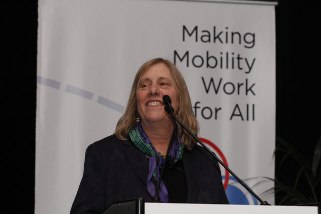
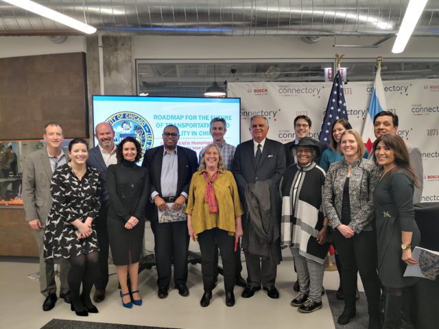
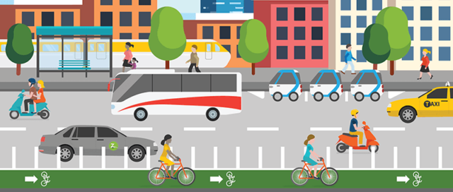

Equity and Diversity at the Shared-Use Mobility Center
by Farrah Daniel, Better Bike Share Partnership Writer
January 31, 2020

Source: John Abbott, The Shared-Use Mobility CenterThe Shared-Use Mobility Center (SUMC) is a catalyst for change.
Since the conception of this nonprofit organization, Founder and Executive Director Sharon Feigon has prioritized connecting the dots of equity and access by bringing together public and private sector operators and organizations to create advanced solutions.
Nothing short of a trailblazer, Feigon’s journey in the transportation industry has been varied and expansive within the urban sustainability space. Before SUMC, Feigon was the Director of Research and Development at the Center for Neighborhood Technology (CNT), where she researched and handled the development of programs and special projects. From there, Feigon served as I-GO Carsharing’s CEO, the first carshare nonprofit in the Midwest.
Today, SUMC continues to be a leading organization assessing transportation barriers to achieve accessible mobility for all. I had the opportunity to speak with Feigon to better understand their approach to equity — here’s how she and her team prioritize and create equitable solutions:
Q: How does SUMC approach its diversity and equity commitments for its conferences?
SF: We’ve kind of evolved over the course of the Summit in terms of thinking about how to do it. Our goal [and vision] right from the start — the whole premise, actually, of the organization — was about creating a multimodal transportation system that [equitably] works for all, and making sure that different ideas about transportation are applicable and useful for all, which is essential; it’s why we’re doing this stuff. Then, trying to figure out how to translate that into something like a Summit, how do you ensure that you have a diverse set of speakers? But we also have a lot of different things we’re trying to do. We’re also about bringing the public sector and the private sector together and having all these different entities mingle together. Everyone has different interests and we want our panel to be very diverse in terms of gender and race. It’s kind of a constant balancing of things.
I think in our first Summit, we were thinking we needed to make sure to have all these panels that deal with equity. Then at the second Summit, we decided, no, that’s core to who we are and what we do; it should be a part of every panel. It shouldn’t be an add-on idea, so we kind of changed our approach.
Q: What is your process for ensuring that people of color are represented in your speakers and participants?
SF: We have a committee that is very committed to helping find people. Our goal is to make sure all of our panels are diverse, and it’s definitely challenging because you kind of get everything set up — I mean, this is what happens with all panels — then people decide they can’t come, a company decides they’re sending somebody else. It’s hard because you want the panel to be experts in whatever the topic is, you want them to represent the public, you want them to represent private. At the same time, you’re also trying to balance all the other considerations of who’s on there.
We spend a lot of time working on this topic, and we’ve all been committed to making sure that all our panels are not older, white guys because that’s what a lot of this industry is. We want old, young, white, black, Hispanic, men and women. There’s just a bunch of different things we’re doing, and it’s just a matter of keeping focus. The other challenge is if the people who are the heads of different agencies meet [diversity] standards or not. It’s just figuring out how to balance everything. I don’t know that we have some complicated, step-by-step process — we just work really hard at it.
I think the biggest thing that’s been helpful is having a little committee of folks who really know different communities. You know, we have a program committee and we try to make sure that’s very diverse so people are reaching into their communities to help us find people.
You need people who are in the field, who know the field well, who can find the people who can speak to the topic. We’re having a topic on multi-modal mobility as a service, [for example], so at the same time, you have to make sure you’re thinking through not just the topic but who are the messengers of the topic.

Source: The Shared-Use Mobility CenterQ: How do you plan to make sure all voices are heard at the 2020 conference and in general operations?
SF: We have our Summit coming up in March and we do have a number that we set, but the goal in terms of the panels is absolutely no man-els and no panels that are all one ethnicity. That’s more than a goal, it’s going to happen. We do have numbers where we calculated where we were before with [diversity participation], but last year we did better than the year before.
Leslie Gray, Feigon’s assistant, provided some additional insight:
“Diversity and equity are fundamental to everything we do [at SUMC]. We believe in clean, shared, affordable, accessible mobility for all and will make sure all voices are heard at this year’s Summit, March 17-19th at the Hyatt Regency McCormick Place. We are working on further diversifying the program committee as well as our panels for 2020. In addition, we are exploring ways we will announce soon that will open up our Summit to those of various income levels.”
Q: What does it mean to bring together the private and public sectors?
SF: [It’s] the way we look at transportation overall. We’re talking about increasing mobility for all and doing it in a way that’s both cost-effective and environmentally sound. We see the sort of global issues we’re dealing with, like climate change and poverty, through the lens of transportation. We want to kind of hit these big problems and transportation, obviously, is critical to job access and economic development. We have this land use that’s not very conducive to many communities and the mismatch between where jobs are located and where housing is located. Especially the kinds of jobs that a wide range of people can get, like people who might be in the poverty area and maybe not college-degreed — a lot of those jobs aren’t in the center of the city; they’re out in suburban places like warehouses and manufacturing.
Our idea is that transit is kind of the center because it can move the most people at the same time, and it’s the most cost-effective. Then, all these different shared modes kind of overlay with it and extend it to potentially create a lot of options for people. The public and private sector part is really that there are so many of these private sector players [with] a lot of innovation and new ideas. If we can harness that for the public good, we can be successful in terms of a robust transportation system. The public sector in a lot of ways has not been invested in well from a transportation perspective. The money has gone into roads and highways. Now, there are all these new companies and they’re not in it necessarily for the public good, but they have a lot of innovation that can be very helpful.
We’re about trying to bring these two sectors together in interesting solutions.

Source: The Shared-Use Mobility CenterQ: What are some examples of that?
SF: We work with the Office of Research of the Federal Transit Administration on the Mobility on Demand (MOD) Sandbox [Innovation and Knowledge Accelerator and On-Ramp Programs], so those are all projects that involved transit agencies, plus shared mobility providers that are mostly private sector partners. They’ve been running pilot projects for the last two years and we’ve been working with them and learning and providing technical assistance.
We also worked very closely with the Air Resources Board (ARB) in California, and all of the projects that we work on there are what California calls “disadvantaged communities,” so it’s basically communities that are lower-income but also have high pollution rates. We work on a lot of different kinds of projects, like first/last mile solution and paratransit type of projects — expanding them with technology, making them more efficient, bringing multimodal transportation options together.
Q: How are these solutions and projects executed, in terms of accessibility, outreach, and meeting equity standards?
SF: We’ve had different roles for different projects. The thing I think is really good in the California project [is] we’re now the co-administrators of a fund that the state created, the Clean Mobility Option. One of the requirements is that it needs to start with a needs assessment and it needs to be community-based so the problems identified are ones that are clearly there; it’s not an outsider thing. I think that’s really essential in all this work. If somebody’s coming up with solutions that nobody’s going to use and isn’t going to meet the needs, then what’s the point, right? That’s one of the problems in a lot of [urban] planning. And there’s a funny balance, though, between what people know and are familiar with and what’s actually possible. Sometimes people don’t want to do things because they don’t have any experience with it, but that doesn’t mean you’re going to be successful trying to solve a problem that isn’t there. That’s why I think the pilot projects are really valuable, because assuming there have been some stakeholders who are involved in the marketing and the fundamentals of a project, you can test it out and people can see what it is, and people can figure out if it works for them.
One of the early projects that we’re still working on [with the ARB] is the Blue LA in California, where we were involved in creating all-electric carshare in low-income areas in Los Angeles. The way we designed that was [with] a community board that would really be involved in all of the decision-making. Early on, when the project board reviewed the proposals from the vendors who wanted to provide the service, [the board] helped select the locations for where the cars would be located, there were discussions about the pricing, then eventually, a lot of people from different communities involved in the project got hired to help with the initial outreach and marketing of the program. So, that’s helped make the project more successful overall because you have people designing it who understand what the need is. You also have those same people helping to do the outreach to let other people know.
Source: The Shared-Use Mobility Center
Q: Why electric cars?
SF: People could use electric cars to do errands, go to the grocery store, all the things that someone might do with a car. By using carshare, you’re using it much less and driving less, but you’re getting the same convenience. You also have less environmental impact, which was part of the ARB’s Cap-and-Trade program of reducing the use of fossil fuels in autos.
Some of the projects we’ve been involved with since then in California have been more oriented toward nonauto uses. In fact, we’ve been involved in the Bay Area with TransForm, the organization working on mobility hubs at different low-income housing locations. Originally, the project was designed to have carsharing, but through a needs assessment [we learned] the community residents in these different housing developments actually did not want carsharing and said it would be better to have shuttles, more transit-like vehicles, and also to have scooters and bikes. Based on that, the number of cars has scaled down.
Q: Are these projects you’re focused on developing in 2020?
SF: These are projects that are underway and have been going on for a while. [In regards to] the new projects, what we’re doing now in California is working with the ARB on kind of designing these new programs through this new clean mobility option. It has to be either a public sector or a nonprofit with a shared mobility project that applies for the funds. Once they’re selected, we’ll be working with the different grant recipients to help design the project on the front-end and make their projects more successful. So, we’ll be using our lessons learned on these other projects to provide technical assistance.
End.
During the interview, Sharon Feigon shared this thought: “I don’t think any of us can do this alone. It’s definitely about bringing different communities and different types of services together [while] keeping the public’s interest at the center.”
I’d like to thank Sharon Feigon for kindly joining BBSP in this important discussion as well as Leslie Gray for her assistance with coordinating it.
This interview has been edited for clarity and accuracy.
The Better Bike Share Partnership is a JPB Foundation-funded collaboration between the City of Philadelphia, the Bicycle Coalition of Greater Philadelphia, the National Association of City Transportation Officials (NACTO) and the PeopleForBikes Foundation to build equitable and replicable bike share systems. Follow us on Facebook, Twitter and Instagram or sign up for our weekly newsletter. Story tip? Write farrah@peopleforbikes.org.